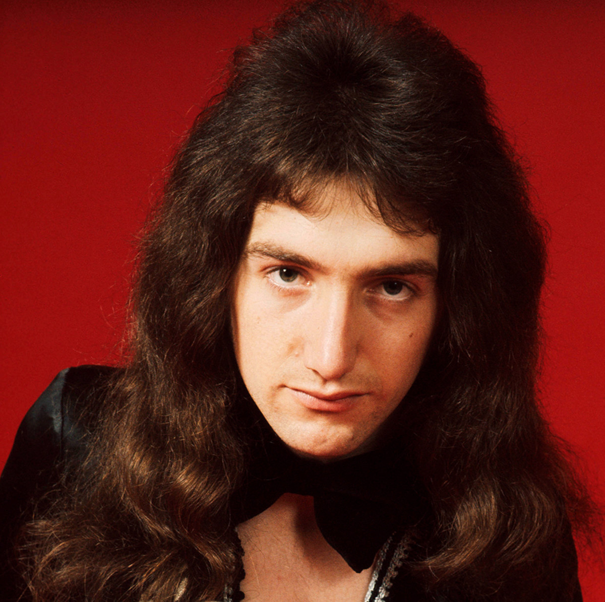
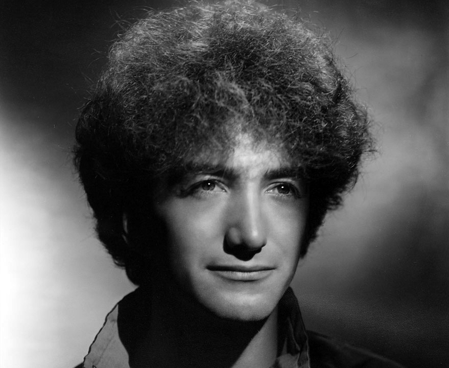

John Deacon
 Родился музыкант 19 августа 1951 года в английском городе Лестер. Спустя 5 лет у Джона родилась сестра Джулия. Глава семейства Дикон работал в страховой компании.
В 7 лет родители подарили мальчику красную пластмассовую гитару «Tommy Steele». Но в то время его больше интересовала не музыка, а электроника. Юный изобретатель читал журналы, а потом конструировал собственные приборы. Ему удалось усовершенствовать старый катушечный магнитофон, превратив его в записывающее устройство. Джон слушал радио и записывал все подряд.
Первыми музыкальными кумирами для будущего гитариста стала группа «The Beatles». Благодаря ливерпульской четверке Дикон почувствовал интерес к музыке. Он слушал «Love Me Do», «Please Please Me», «Ask Me Why» и другие композиции и мечтал играть так же.
В 1965 году старшеклассник организовал группу с ожидаемым для подростка названием «The Opposition», которую уже через год переименовал в «The New Opposition». В команде сначала играл на ритм-гитаре, а потом, после ухода бас-гитариста, переквалифицировался и уже всю жизнь оставался верен инструменту. Первую бас-гитару «EKO» Дикон купил за £ 22. Спустя 4 года, 29 августа 1969-го, «The New Opposition» сыграли последний концерт, после чего Дикон пошел своей дорогой, а группа, изменив название на «The Art», - своей.
Уход фронтмена связан с приглашением в Лондон для учебы в техническом колледже Челси, являющемся составляющей частью «Лондонского Имперского колледжа». Молодой человек уехал, оставив бас-гитару, усилитель и старую жизнь в родном городке. Однако спустя полгода понял, что не может без музыки, и попросил маму выслать оборудование.
Еще в студенческие годы Дикон услышал выступление начинающей тогда группы «Queen», которое не произвело на него никакого впечатления. В то время он жил новым стремлением – создать свою команду и играть. Осуществил его молодой человек достаточно быстро. Новое детище музыканта - группа «Deacon», отыграла первый концерт и перестала существовать. Все потому, что гитариста взяли в «Queen», и в его биографии начался новый этап.
Мастерство бас-гитариста Дикона быстро росло. Его высоко оценивали не только слушатели, но и коллеги по цеху. Помимо профессиональной игры на гитаре, он отвечал за оборудование «Queen». Будучи талантливым техником, сделал усилитель «Deacy Amp», который использовал сам, а впоследствии - Брайан Мэй.
Самый уравновешенный участник команды совмещал в себе еще один талант – умение обращаться с финансами. Музыкант почти с самого начала заведовал финансовыми делами команды, выполняя функции внутреннего контролера, администратора и даже бухгалтера.
После смерти Фредди Меркьюри в 1991 году музыкант твердо заявил о своем уходе из группы. Последним в составе «Queen» для него стало выступление в рамках Лондонского благотворительного концерта памяти вокалиста. Еще один раз он вышел на сцену с коллективом в 1997 году. Тогда состоялся мемориальный концерт, по итогам которого записали единственную песню без участия Меркьюри — «No-One but You (Only the Good Die Young)».